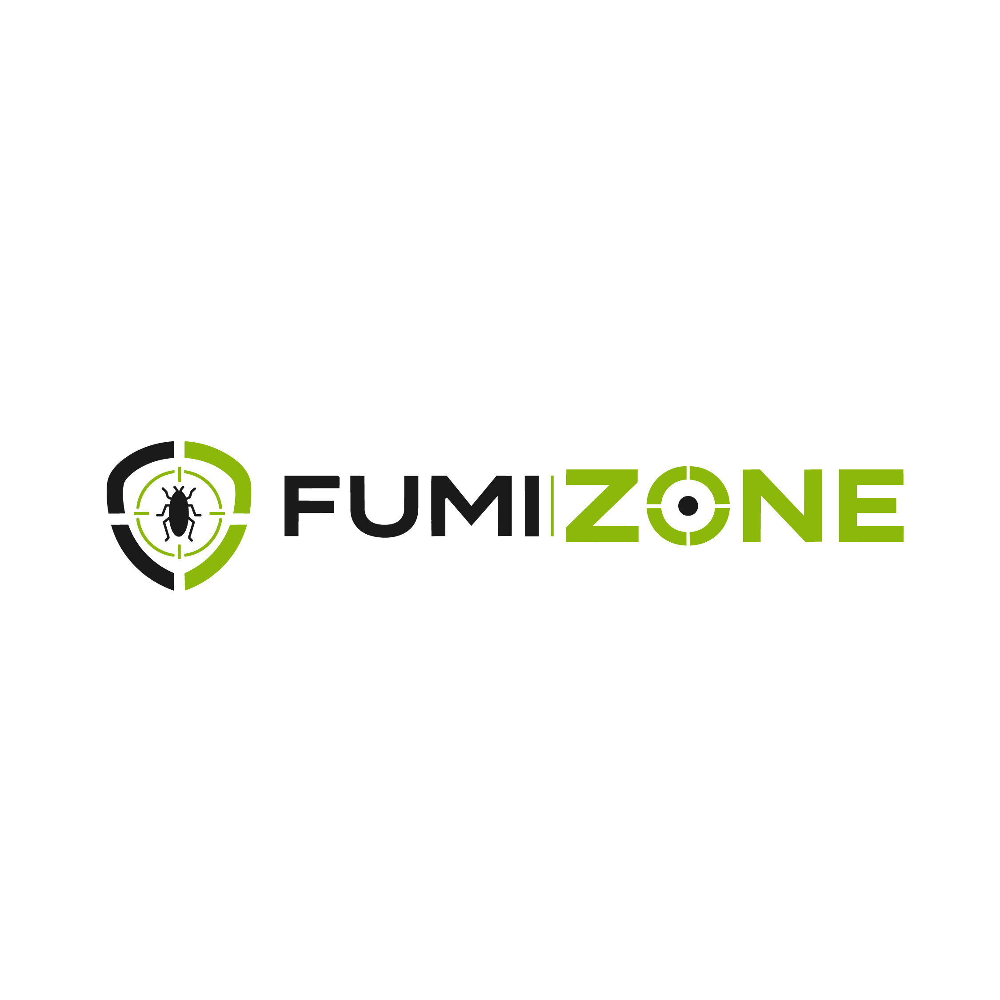
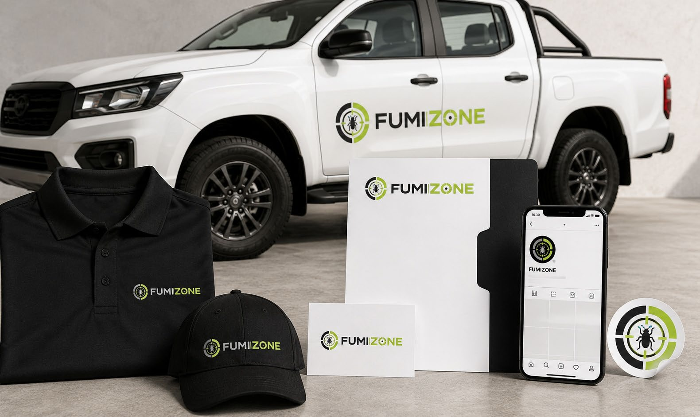

Escuchamos e inspeccionamos
Evaluamos la actividad de termitas y las condiciones del espacio afectado.

Solicitar asesoramiento ↗CONTROL DE TERMITAS · FUMIZONE
Protegé tu espacio frente a las termitas. Control y prevención para cuidar la madera y lo que más importa.
Quiero proteger mi espacio ↗
01 / SOLUCIONES
Inspección, tratamiento y seguimiento.
Un enfoque centrado en el control de termitas.
Evaluación de señales de termitas y de las áreas afectadas para orientar el tratamiento.
Consultar solución ↗Un plan de tratamiento contra termitas, definido según la evaluación de tu espacio.
Consultar solución ↗Revisión de la actividad de termitas y recomendaciones para prevenir nuevos daños.
Consultar solución ↗02 / NUESTRO ENFOQUE
Cada problema es distinto. Por eso, una solución comienza por entender tu espacio y definir los siguientes pasos.
Contanos qué está pasando ↗Evaluamos la actividad de termitas y las condiciones del espacio afectado.
Te explicamos el tratamiento propuesto y las indicaciones para preparar el lugar.
Compartimos recomendaciones y evaluamos si hace falta un seguimiento.
03 / RESOLVEMOS TUS DUDAS
Contanos qué señales de termitas observaste, en qué tipo de espacio y desde cuándo. Si conocés la superficie aproximada, también ayuda a orientar la evaluación.
La preparación depende del tratamiento. Antes del servicio se deben confirmar las indicaciones sobre alimentos, objetos, ventilación y acceso al lugar.
Informalo al solicitar asesoramiento. Las medidas de protección y los tiempos de reingreso deben definirse según el producto y el procedimiento utilizado.
Depende del nivel de actividad de las termitas y del entorno. La evaluación permite determinar si se necesitan visitas adicionales o monitoreo.
04 / DEMOS EL PRIMER PASO
Prepará una consulta con los detalles de tu caso.